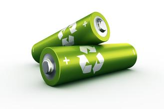
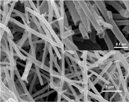
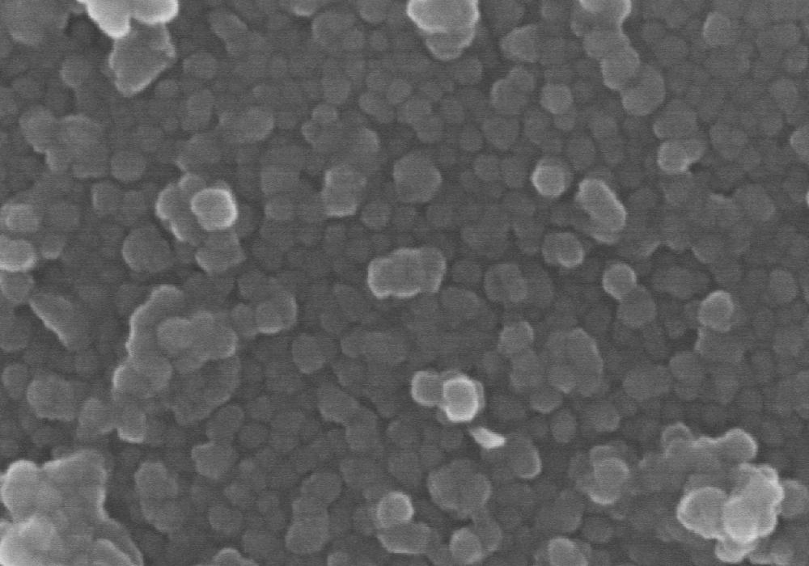

硅纳米管电池 [三人小组：王会一，郑浩熠，陈金昕] |
简介 在电池中用硅纳米管代替碳成为阳极从而极大地提升电池的使用容量。 |
 |
|
用硅纳米管代替碳的优势 石墨类碳材料理论比容量只有372mAh/ g ,因而限制了锂离子电池比能量的进一步提高,不能满足日益发展的高能量便携式移动电源的需求。硅材料其理论容量达4200mAh/ g ,在目前研究的各种合金中理论容量最高。 |
 |
 |
用硅纳米管代替碳的劣势 然而传统硅材料在充放电循环过程中,Li2Si 合金的可逆生成与分解伴随着巨大的体积变化,会引起合金的机械分裂。 但当合金材料的颗粒达到纳米级时,充放电过程中的体积膨胀会大大减轻！ |